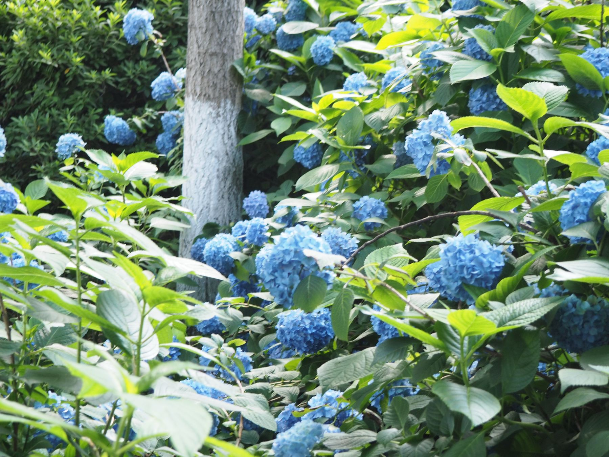
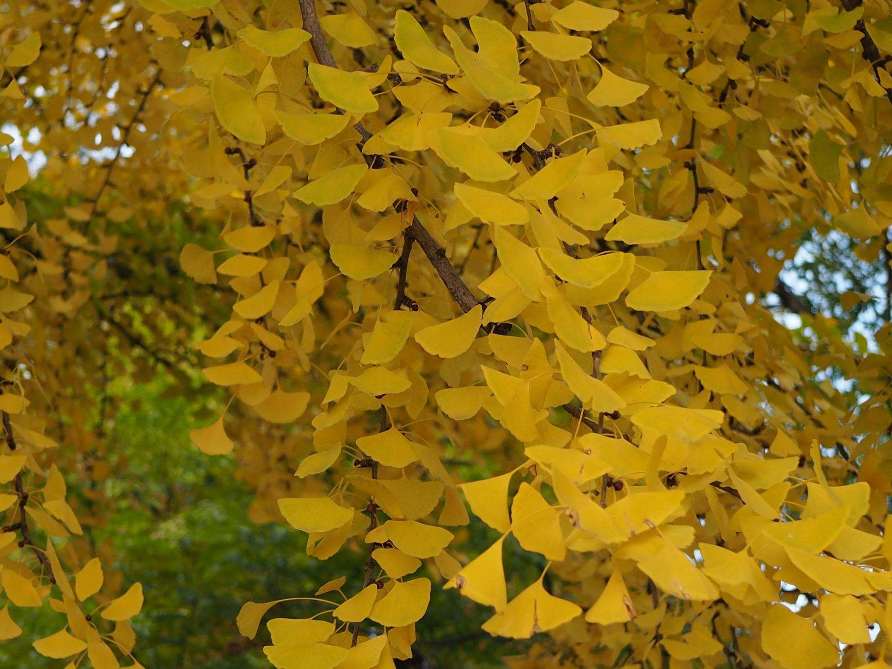
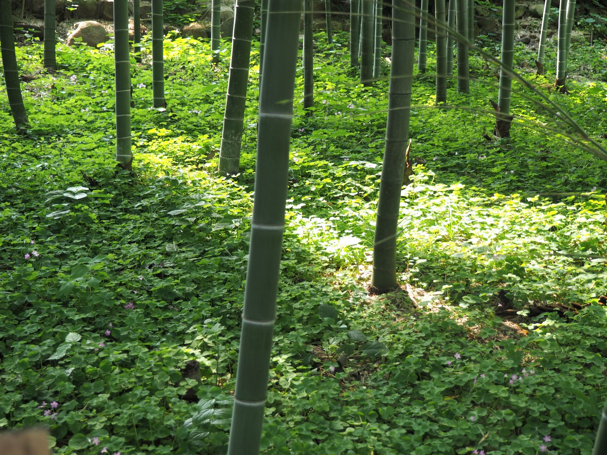
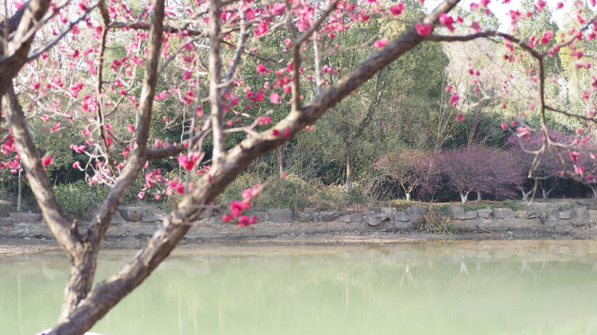
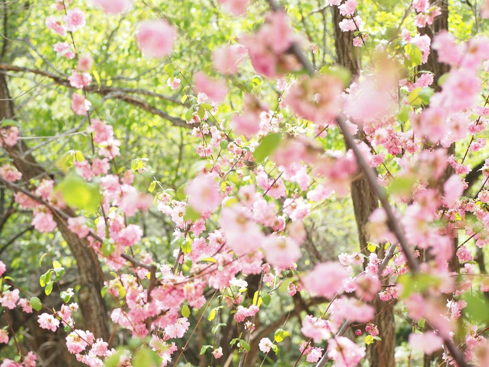
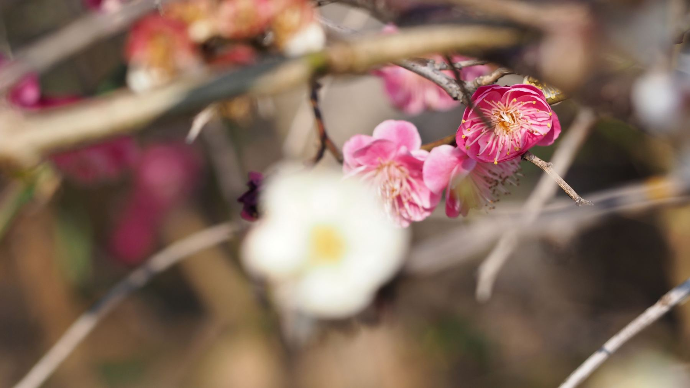
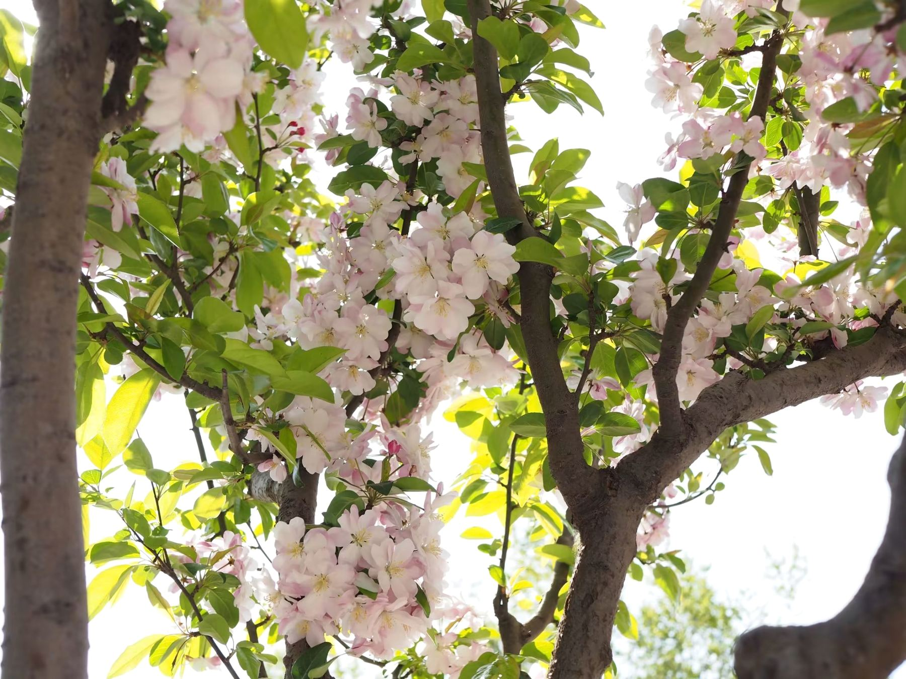
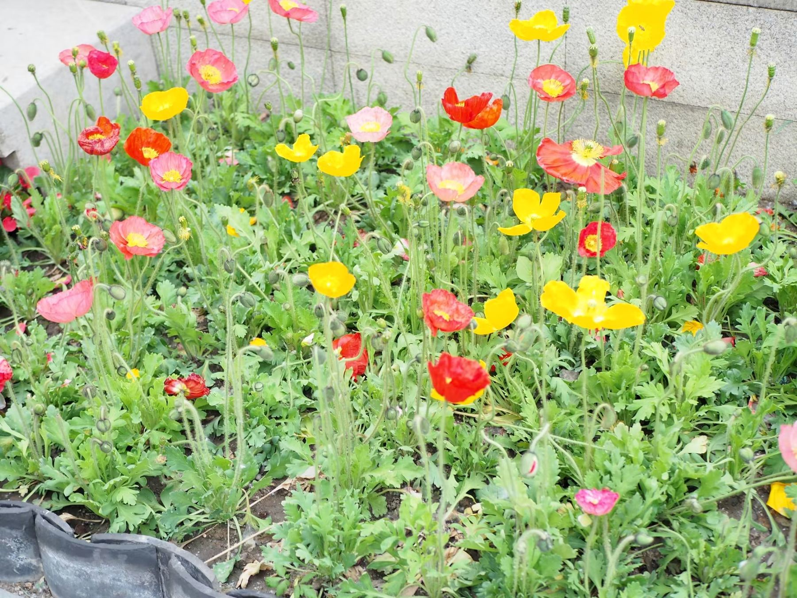
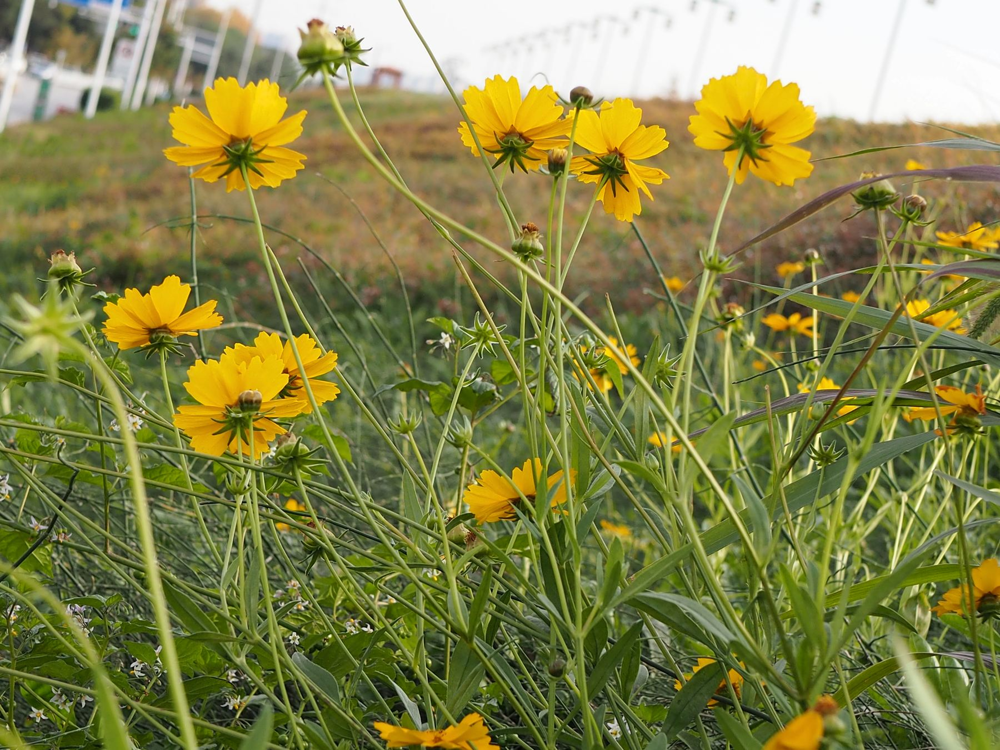
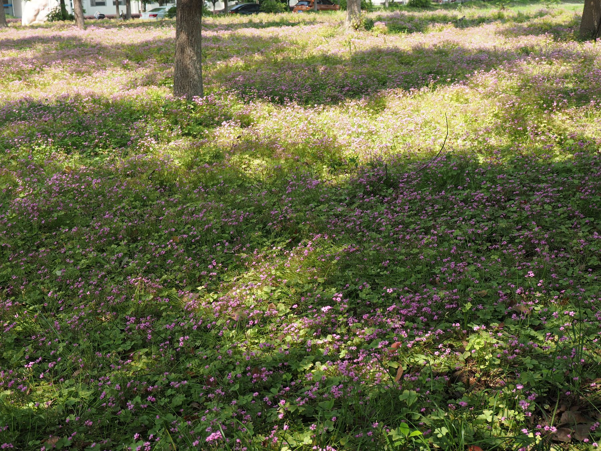

银杏·逆光Ginkgo, backlit
GARDEN — A Season in the Garden
园林是一种被安排过的自然。梅先开，绣球后至，银杏把整条走廊烧成金色。
我花了三年时间记录这种顺序——花不是同时盛开的，季节也不是。
A garden is nature with an order imposed on it. Plum first, hydrangea after, and ginkgo burning the whole corridor gold. Three years went into recording that order: flowers never open all at once, and neither do seasons.

第 41 页：绣球开了七次，我拍了六次。










灯